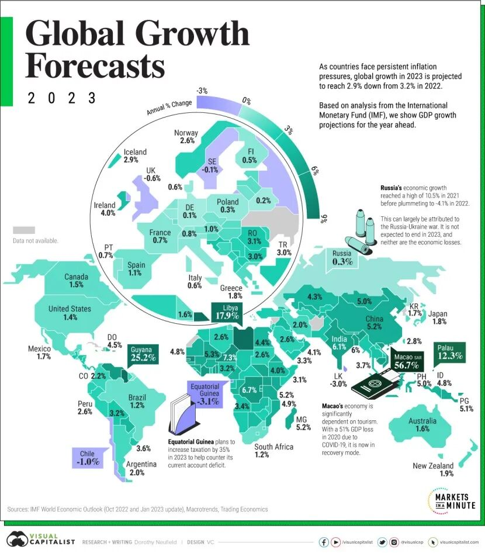

Information Architecture
我们关注的话题
Series
按系列继续阅读
Latest
最近更新
世界经济史 / 世界经济史
历史无处不罗马
历史无处不罗马，一代人又一代人的故事让世界历史成了不停温习罗马章节的复习课。

世界经济观察 / 世界经济观察
2026年全球经济形势预测：低速增长、分化加剧、风险累积
2025年很快就要过去了，那些在年初曾经困扰我们的不确定性在这一年里都变成了确定的事实。
世界经济史 / 世界经济史
足球上的政治经济学
体育无关政治”的口号是历史上每个时代的憧憬和理想，但可惜的是，体育从来都不只是单纯的娱乐和切磋，它总是和那个时代的经济政治话题如影随形。
世界经济观察 / 世界经济观察
“金价跌、金饰涨”背后的“投资逻辑”与“消费逻辑”
投资的黄金强调流动性、避险、宏观变量；消费的黄金强调文化认同、品牌溢价以及零售体验。